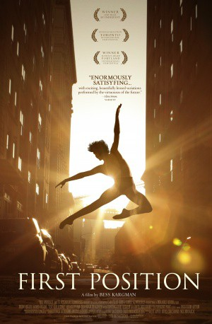

#8188 First Position - Ballett ist ihr Leben
Alternativ: First Position
 
 IMDB-Wertung: 7.6 / 10
IMDB-Wertung: 7.6 / 10  Metascore: 0
Metascore: 0 
Für 5.000 Bewerber/innen beim ‘Youth America Grand Prix’ jährlich, ist Ballett nicht bloß Plan B. Ballett ist der einzige Plan. Alles was zählt. Jahrelange harte Arbeit, eiserne Disziplin und der Wille nach ganz oben zu kommen, sind hier auf fünf Bühnenminuten komprimiert, in denen die Bewerber alles geben müssen. Sechs der jungen Talente begleitet Bess Kargman bei deren Vorbereitung zu diesen 300 nervenzermürbenden Minuten, die ihr gesamtes Leben verändern könnten – denn auf die Sieger warten die weltbesten Stipendien und die gefragtesten Verträge der Welt. Wer es hier schafft, schafft es überall.
Jahr: 2011
Dauer: 94 Minuten
FSK: 0
Land: USA Studio: Sundance SelectsTonspuren: DTS - ,
Untertitel:
Auflösung: 1080p (1920x1080) Größe: 9482 MB
Genre: Dokumentation
Regisseur: Bess Kargman
Drehbuch: Myra Lewis
Soundtrack: Chris Hajian
Darsteller:
- Aran Bell als Himself
- Rebecca Houseknecht als Herself
- Joan Sebastian Zamora als Himself
- Satoko Fogarty als Herself
- Susan Jaffe als Herself
- Maddalena Di Giacomo als Herself
- Miko Fogarty als Herself
- Jules Jarvis Fogarty als Himself
- Michaela DePrince als Herself
- Gaya Bommer Yemini als Herself
- Michelle Bell als Herself
- Ryan Bell als Himself
- Elaine DePrince als Herself
- Charles DePrince als Himself
- Wendy Houseknecht als Herself
- David Houseknecht als Himself
- Mat Fogarty als Himself
- Nadine Bommer als Herself
- Ziv Yemini als Himself
- Claudia Hurtado als Herself
- Guido Arturo Prieto als Himself
- Denys Ganio als Himself
- Bo Spassoff als Himself
- Stephanie Spassoff als Herself
- Viktor Kabaniaev als Himself
- Michelle Lees als Herself
- Larissa Saveliev als Herself
- Mia DePrince als Herself
- Derek Dunn als Himself
- Brian Dunn als Himslf
- Vicki Dunn als Herself
- Danielle Dunn als Herself
- Melanie Shee als Herself
- Chiu Shee als Himself
- Aleandra Bell als Herself
- Travis Halsey als Himself
- Dmitri Kulev als Himself
- Emily Entingh als Herself
- Hannah O'Neil als Herself
- Juliet Doherty als Herself
- Zhao Wan Ting als Himself
- Claudia Dean als Herself
- Miki Akuta als Herself
- Kazuko Sugihara als Herself
- Edo Wijen als Himself
- Sam Zalvidar als Himself
- Gabe Shayer als Himself
- Shelley King als Herself
- Alys Shee als Herself
- Evelyn Hart als Herself
Datei: X:\Dokumentationen\Sport\First Position - Ballett ist ihr Leben (2011, FSK0, 1920x1080).mkv seit 07.02.2018
Festplatte: HD Serien(SU-Z)+Dokus+Musik
 Es gibt insgesamt 34 Filme in der Gruppe 'Dokumentationen\Sport'
Es gibt insgesamt 34 Filme in der Gruppe 'Dokumentationen\Sport'